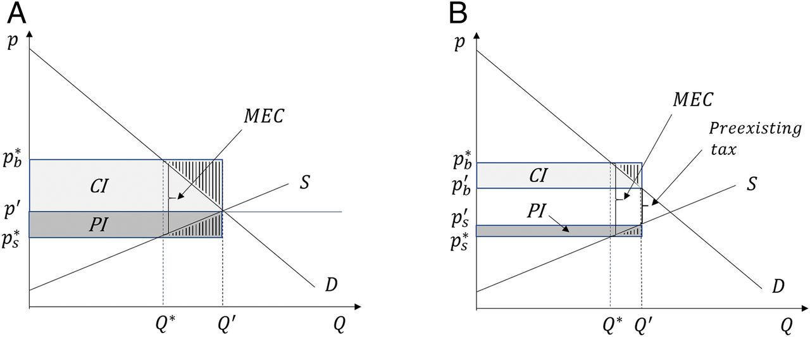
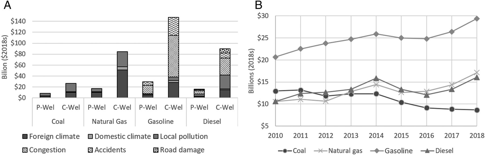

27 Fossil Subsidies
This paper estimates the financial benefits accruing to fossil fuel producers (i.e., the producer incidence) that arise because of implicit fossil fuel subsidies in the United States. The analysis takes account of coal, natural gas, gasoline, and diesel, along with the implicit subsidies due to externalized environmental damages, public health effects, and transportation-related costs. The direct benefit to fossil fuel producers across all four fuels is estimated at $62 billion per year, a sum calculated due to the higher price that suppliers receive because of inefficient pricing compared to the counterfactual scenario where environmental and public health externalities are internalized. A significant portion of these benefits accrue to relatively few companies, and specific estimates are provided for companies with the largest production. The financial benefit because of unpriced costs borne by society is comparable to 18% of net income from continuing domestic operations for the median natural gas and oil producer in 2017–2018, and it exceeds net income for the majority of coal producers. The results clarify what the domestic fossil fuel industry has at stake financially when it comes to policies that seek to address climate change, adverse health effects from local pollution, and inefficient transportation.
Producer Incidence
The producer benefits of interest—i.e., the producer incidence (PI)—are based on the higher price that suppliers receive because of inefficient pricing compared to the counterfactual scenario where environmental and public health externalities are internalized. The direct financial benefit to fossil fuel producers of inefficient pricing across all four fuels is estimated at $62 billion per year on average, representing 11% of the total annual subsidy of $568 billion. The total subsidy is equivalent to an average of 3% of US Gross Domestic Product and equals the estimated value of the environmental, public health, and transportation-related externalities on an annual basis. To be clear, the focus here is not on direct subsidy payments that reduce the costs of fossil fuels, but rather on the implicit subsides that arise because of inefficient pricing that gives rise to social costs (1, 2, 6). While direct subsidy payments are common in many countries (7⇓–9), they are not in the United States.
This paper also makes two methodological contributions to the literature on fossil fuel subsidies. First is a generalization and implementation of the standard International Monetary Fund (IMF) framework to separately estimate the PI and consumer incidence (CI). A key feature of existing studies—which focus on economic efficiency, environmental and health impacts, and government revenues—is the simplifying assumption of perfectly elastic supply. This implicitly assumes away fundamental concerns about the extent to which the fossil fuel industry benefits from subsidies and may therefore seek to prevent reform. The approach taken here uses empirically based estimates of supply elasticities to examine distributional implications, with a focus on PI.
Conceptual Framework
Implicit fossil fuel subsidies represent a hybrid of the standard tax and subsidy scenarios. This follows because externality-based, fossil fuel subsidies arise because of failure to implement efficient pricing, which confers an implicit subsidy. While different mechanisms are possible to establish efficient pricing, the most straightforward to illustrate the key points is Pigouvian taxation. Consider the market for a particular fossil fuel, characterized by the supply and demand curves in Fig. 1A. The initial equilibrium occurs at price p’ and quantity Q’, which is not efficient because of external costs in the form of environmental damages and adverse health effects. Assume for simplicity that the marginal external costs, denoted MEC, are constant. A Pigouvian tax equals the MEC and places a wedge between the supply and demand curves. If implemented, the Pigouvian tax would establish the efficient quantity Q∗ as the equilibrium and the prices buyers pay and sellers receive as pb∗ and ps∗, respectively.

Figure: The PI and CI of an implicit fossil fuel subsidy. MEC represents the marginal external cost associated with each unit of Q. (A) The presence of no preexisting tax is assumed. The total implicit subsidy is the area MEC×Q’. The incidence measures capture the gain in producer and consumer surplus from inefficient pricing, i.e., the respective shaded areas excluding the vertically hashed triangles. (B) A case with a preexisting tax; the net corrective tax is the difference between the MEC and the preexisting tax.
The implicit fossil fuel subsidy is defined as the sum of all shaded areas in Fig. 1A; i.e., the rectangle equal to MEC×Q’. This is an effective subsidy because it represents real costs borne by society—through environmental damages and adverse public health effects or foregone tax revenue—but not reflected in the market (1, 10). Of central interest here is the way that the total subsidy differentially benefits consumers and producers (i.e., the measures of incidence). The CI captures the change in net benefits to consumers (i.e., consumer surplus) because of the lower price they pay, and the PI captures the change in net benefits to producers (i.e., producer surplus) because of the higher price they receive. These measures are illustrated in Fig. 1A as the shaded areas labeled CI and PI, respectively, which do not include the vertically hashed triangles. The two regions represent the net gain to consumers and producers of maintaining inefficient pricing.
Previous research nevertheless implicitly assumes the PI is zero, which follows because of the simplifying assumption of perfectly elastic supply (1, 2, 6, 8⇓–10). The assumption is reasonably motivated in previous analyses because of the focus on efficiency rather than distributional concerns between producers and consumers. The assumption is also reasonable in cases where the focus is on relatively small countries subject to the global supply of fossil fuels. The assumption does not, however, fully characterize markets in the United States, especially when it comes to coal and natural gas, which are less interconnected in a global market compared to oil. While less is known about supply elasticities compared to those for demand, existing research does provide a basis for informed assumptions that push away from the limiting case of perfect elasticity, especially for the United States.
A final piece of the model to consider is the possibility for preexisting subsidies or taxes. An explicit, preexisting subsidy would be a direct government payment to reduce the producer or consumer costs of fossil fuels, but as mentioned previously, these are not common in the United States. Instead, implicit market subsidies do arise because of existing tax preferences for oil and gas firms, which have been estimated to cost the US government roughly $4 billion annually in foregone revenue (11). These subsidies are not accounted for in the present analysis because of the focus on nonmarket implicit subsidies. There are, however, preexisting taxes that affect the immediate applicability of Fig. 1A, and these must be taken into account to get an accurate measure of the fossil fuel subsidy in each case. Fig. 1B generalizes the framework to show how existing tax revenue associated with the initial equilibrium at Q’ is not included in the overall subsidy. In this case, the implicit subsidy is based on the net corrective tax (i.e., MEC minus the preexisting tax). The measures of incidence differ as shown but still represent the difference in the respective surplus measures.
Overall Producer Incidence
The methodological approach for estimating the incidence of fossil fuel subsidies requires several steps, all of which are described in detail in SI Appendix. First is obtaining price and quantity data for the different fuels. Second is estimating the MEC associated with each fuel. Third is obtaining information on preexisting taxes in order to calculate the net corrective taxes. Fourth is an approach for generating counterfactual prices that would emerge with efficient pricing. Last is obtaining estimates of supply and demand elasticities.
Total Subsidy
The results indicate a total subsidy across all four fuels of $592 billion in the most recent year, 2018. This number represents the external costs borne by society or foregone government revenue from inefficient pricing. Included in the external costs is the value of climate damages reflected in the social cost of carbon and adverse health effects from local pollution (SI Appendix, Fig. S1). The external costs for gasoline and diesel also include the value of congestion-based travel delays and accident fatalities, along with wear and tear on the roadways from heavy-duty, diesel fuel vehicles (SI Appendix, Fig. S1).

Figure: The PI and CI of the subsidy for all fuels. (A) The measures of PI and CI for all four fuels (coal, natural gas, gasoline, and diesel) for the most recent year, 2018. Data for all other years are available in SI Appendix. Each measure is further partitioned into the underlying externalities, which are proportionally the same between both measures of incidence for each fuel (SI Appendix, Fig. S1). (B) The trend in PI over time for each fuel. While the producer benefits to coal have decreased 33%, those for all other fuels have increased substantially: 42% for gasoline, 52% for diesel, and 63% for natural gas.